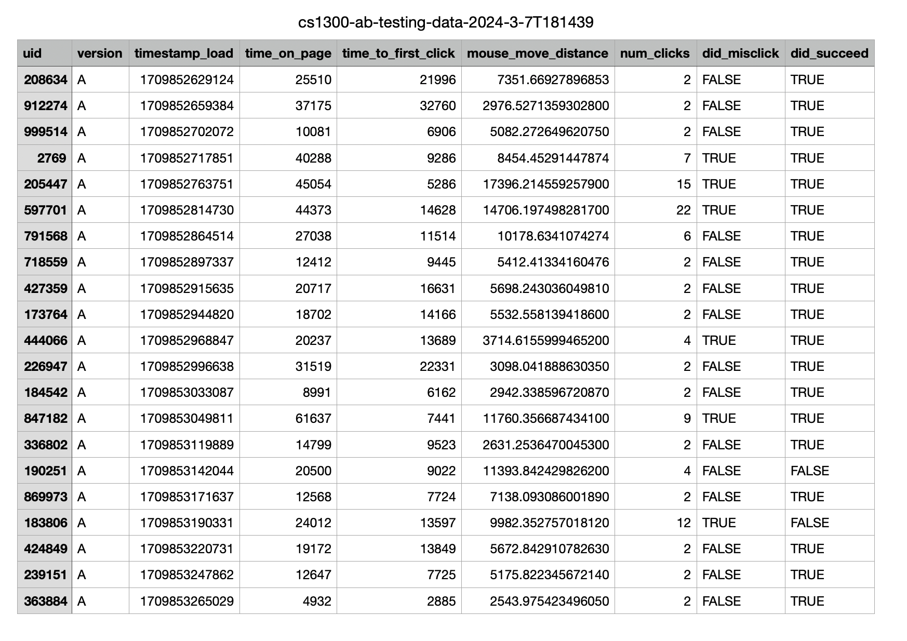
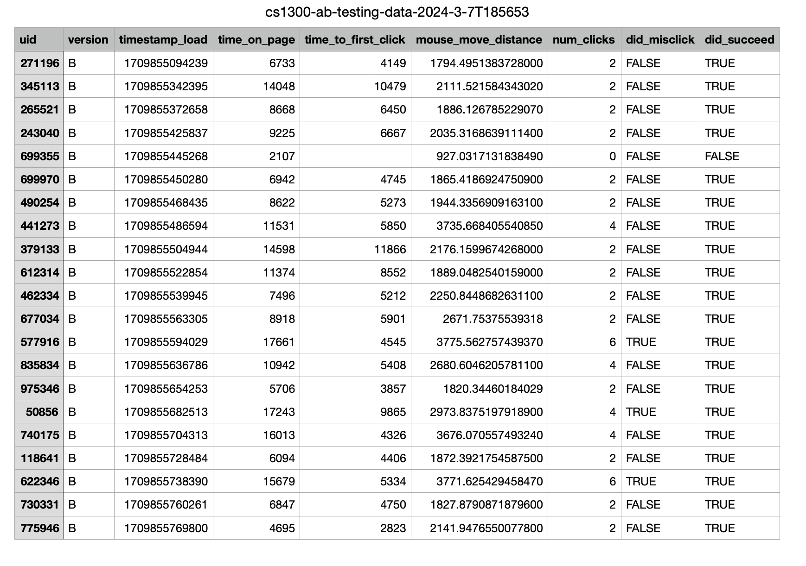

AB Testing
Utilizing AB testing to increase usability for a
website where users can book medical appointments.
Background
The interface we are trying to improve is MEDx, a
medical interface where users schedule a variety of
doctor appointments, view test results, medical records,
and more.
After trying to schedule an appointment with
Dr. Adam Ng for April 23 at Morristown Medical Center,
I noticed the following pain points:
-
Buttons had low contrast between button color and text
- The button colors made the button look disabled
-
Buttons don't visually change when mouse hovers over it,
so it is unclear if they can be clicked
-
Too much distance between appointment slot and button to
select the appointment, making it difficult to
see which button corresponds to which appointment
-
Appointments are not listed in any obvious
chronological order or any obvious alphabetical
order
-
Each appointment slot has the type of appointment bolded
rather than the specific doctor and location (which the
user needs to select their appointment)
The original website (version A):
Once I noticed the above pain points, creating a version B
of the website, I made the following changes to version A:
-
Increased color contrast between button background color
and button text color, so buttons appeared clickable
-
When mouse hovers over button, the buttons change
colors to indicate that they can be clicked
-
Decreaesd the distance between appointment slot and
the button to select the appointment, making it
easier for the user to see which button
to press to book an appointment
-
Appointments are listed in chronological order of appointment
date (from closest date to farthest date)
- Header of page now specifics how appointments are sorted
-
Each appointment slot has the doctor's name bolded with
the location listed next (making it easier for the
user to select the correct appointment)
The modified website (version B):
Hypotheses
Reflecting on the changes made to version A, I considered
how the changes would affect misclick rate, time on page,
and number of clicks.
The 3 metrics are defined as following:
- Misclick rate = the frequency with which users
click something else on the page before finding
the correct button for the task
- Time on page = time spent on the webpage for
each user group
- Number of clicks = the number of times the
user clicked on the screen
With these 3 metrics in mind, I created a null and
alternative hypothesis for each.
Null Hypotheses
-
Misclick rate: Version A of the website has
the same misclick rate as Version B of the website.
-
I predict that I will end up rejecting this null
hypothesis because Version B's buttons indicate they
can be clicked so that users will click around exploring
the webpage less, reducing misclick rate.
-
Time on page: A user's time on page is the same for
Version A of the website as it is for Version B.
-
I predict that I will end up rejecting this null
hypothesis because Version B has clearer buttons &
orders appointments by what the user needs to choose
an appointment slot (date, doctor name, location),
allowing user to complete the task faster and decrease
their time on the page.
-
Number of clicks: The number of clicks produced
on Version A of the website is the same as the
number of clicks produced on Version B.
-
I predict that I will end up rejecting this null
hypothesis because Version B's buttons change colors once
hovered over and the doctor's appointments are ordered
according to how the user chooses it, so that users will not
click around exploring the webpage as much, reducing the
total number of clicks compared to those from Version A.
Alternative Hypotheses
-
Misclick rate: Version A of the website will
have a higher misclick rate compared to Version B of the website.
-
I hypothesize this because Version B's buttons indicate they
can be clicked so users will click around exploring
the webpage less, reducing misclick rate for Version B.
-
Time on page: A user's time on page will be greater for
Version A of the website than Version B.
-
I hypothesize this because Version B has clearer buttons &
orders appointments by what the user needs to choose
an appointment slot (date, doctor name, location),
allowing user to complete the task faster and decrease
their time on Version B compared to Version A.
-
Number of clicks: The number of clicks produced
on Version A of the website will be greater than the
number of clicks produced on Version B.
-
I hypothesize this because Version B's buttons change colors once
hovered over and the doctor's appointments are ordered
according to how the user chooses it, so that users will not
click around exploring the webpage as much, reducing the
total number of clicks compared to those from Version A.
Data Collection
In order to collect data on the 3 metrics we are interested in
(misclick rate, time on page, and number of clicks),
we had each user first try to accomplish the task of booking
an appointment with Dr. Adam Ng on April 23 at the Morristown
location on version A of the website.
Before the user started the task, they had never seen the website
before. To start the task the user was brought to a neutral page
and clicked a button to start timing and tracking their activity.
After clicking the button to start the task, they were brought to
the website (version A) where they tried to complete the task described
above. Once they had successfully booked the appointment, the website
took them back to the neutral page and stopped recording their activity.
Next, after version A was modified and version B was created, the same sample
of users rotated among 21 laptops to try different version B websites.
The same protocol of starting and ending at a neutral page described above was employed.
This potentially introduced bias since the same users were used to test version B.
These users had seen version A before, which is extremely similar to version B.
In addition, users became even more
familiar with the website after trying 21 very similar version Bs.
So, it is possible a user may have fewer misclicks and less time on page
due to the increased familiarity and not necessarily because of version B entirely.
However, for the purposes of this we will assume the bias created from this is negligible.
The following is data collected from Version A of the website:

The following is data collected from Version B of the website:

Statistical Tests on Data
After data collection, we ran statistical tests for each metric (misclick rate,
time on page, and number of clicks)
on the data to determine
if the difference between versions A and B is statistically significant.
The findings are described below:
-
Misclick rate:
-
I decided to run a chi squared test because the misclick
rate is categorical (a boolean true for misclick and false for not misclicking).
-
From the test, we have found the following values:
-
df = 1
- This value represents the number of independent values being estimated
from the sample group of users.
-
chi^2 = 1.272
This value represents the size of the discrepancy between
the expected and actual results.
-
p-value = 0.259
- This value measures
how likely it is that any observed difference
between the samples is due to chance.
-
The difference between Version A's misclick rate and Version B's
misclick rate is not statistically significant.
-
We fail to reject the null hypothesis since p > 0.05.
-
Time on Page:
-
I decided to run a one-tailed t-test because time is continuous,
version A is the baseline that we are comparing version B's
time on page to, and the alternative hypothesis specifically predicts that version
B's time on page will be lower than version A's.
-
From the test, we have found the following values:
-
Avg(A) = 24398.286
-
This is the average total time (in milliseconds)
that the users spent on version A before completing the task.
-
Variance(A) = 206407623.014
This is the average squared distances of users' total times
from the mean total time on version A.
-
Avg(B) = 10054.381
- This is the average total time (in milliseconds)
that the users spent on version B before completing the task.
-
Variance(B) = 19398123.348
- This is the average squared distances of user's total times
from the mean total time on version B.
-
Degrees of Freedom = 23.726
- This value represents the 21 values being estimated since
the sample group of users was 21 and is adjusted since
the sample variances are not equal.
-
T-score = 4.374
This value represents the difference between the data of the
two samples, which corresponds to a shaded area under the T-distribution curve
(essentially acting as a probability).
-
P-value(A < B ) = 0.9999
This value measures
how likely it is that
the relationship, the time on verion B > the time on version A,
is due to chance.
-
The difference between Version A's time on page and Version B's
time on page is statistically significant.
-
We find statistically significant evidence that the
alternative hypothesis is true since 0.05 > 1-0.9999, so we reject the null hypothesis.
-
Number of Clicks:
-
I decided to run a one-tailed t-test because
version A is the baseline that we are comparing version B's
metric to, the alternative hypothesis specifically predicts that version
B's number of clicks will be lower than version A's, and because
here I decided to treat number of clicks as continuous data.
-
From the test, we have found the following values:
-
Avg(A) = 5
- This is the average number of clicks users produced on version A before completing the task.
-
Variance(A) = 28.9
- This is the average squared distances of users' number of clicks from the mean total clicks on version A.
-
Avg(B) = 2.667
- This is the average number of clicks that users produced on version B before completing the task.
-
Variance(B) = 2.13
- This is the average squared distances of user's number of clicks from the mean number of clicks on version B.
-
Degrees of Freedom = 22.9377
- This value represents the 21 values being estimated since the sample group of users was 21 and is adjusted since the sample variances are not equal.
-
T-score = 1.919
- This value represents the difference between the data of the two samples, which corresponds to a shaded area under the T-distribution curve (essentially acting as a probability).
-
P-value(A < B ) = 0.966
- This value measures how likely it is that the relationship, the number of clicks on verion B > the number of clicks on version A, is due to chance.
-
The difference between Version A's number of clicks and Version B's
number of clicks is statistically significant.
-
We find statistically significant evidence that the
alternative hypothesis is true since 0.05 > 1 - 0.966, so we reject the null hypothesis.
Summary Statistics
Overall, from 21 data points, it was found that version B did not affect
the misclick rate, while version B decreased the time on page and
total number of clicks.
Focusing on the misclick rate, we found that version A had a misclick rate of
0.288 while version B had a misclick rate of 0.143. Although version B's misclick rate
is lower, we know from our chi-squared test that this is not a statistically
significant enough difference to conclude version B affected this metric.
This could potentially be due to the fact that a data point from version B
was null (no clicks and user did not complete the task).
Now, considering the user's time on the page, the average amount of time on version A was 24398 milliseconds
whereas version B's average time on page was 10054 milliseconds. Version A's time on page variance was
206407623 milliseconds where as Version B's variance for time on page was 19398123 milliseconds.
Version B's average time on page was more than half that of Version A's average time on page.
For number of clicks, version A's average number of clicks was 5 whereas Version B's average
number of clicks was 2.7. Here, Version B's average number of clicks was almost halved compared
to Version A's average number of clicks. The variance for Version A's number of clicks was 28.9 whereas
for Version B it was 2.13. So, generally, B's average is more consistent.
Conclusion
To conclude, we found that while version B may not have improved every
metric, on an overall sense of the website it did decrease average time on page,
number of clicks on the page, and had a lower average misclick rate. While I was
surprised that for the misclick rate we failed to reject the null hypothesis, there was
a null data point that had been included in the 21 samples collected from studio.